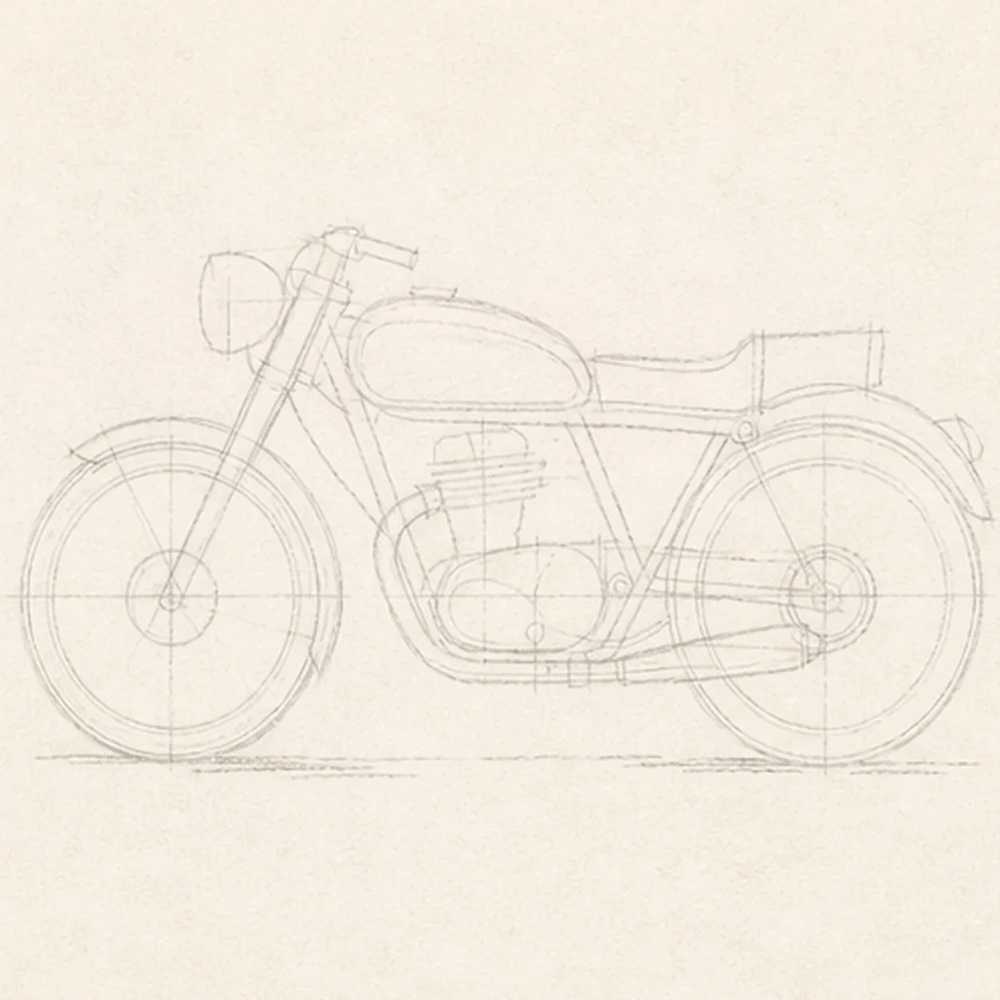
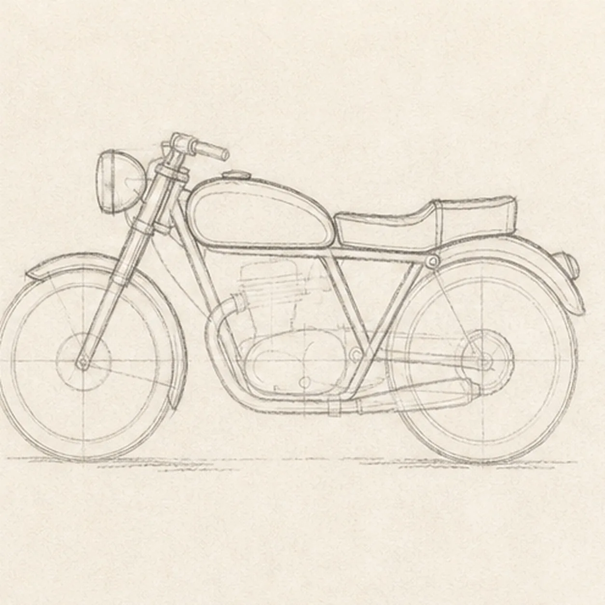
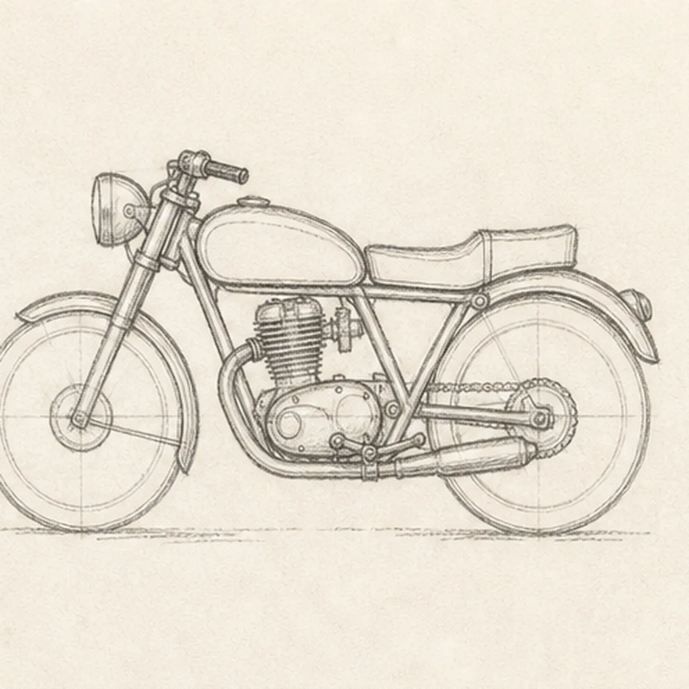
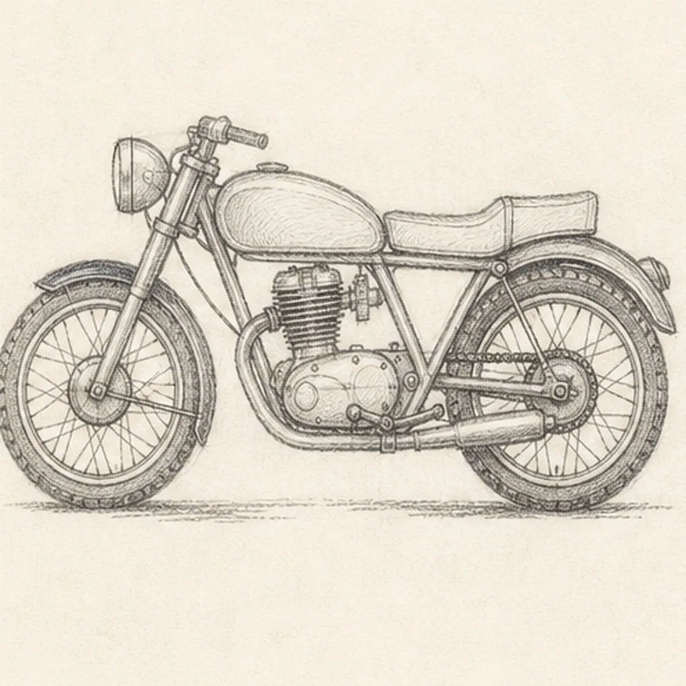
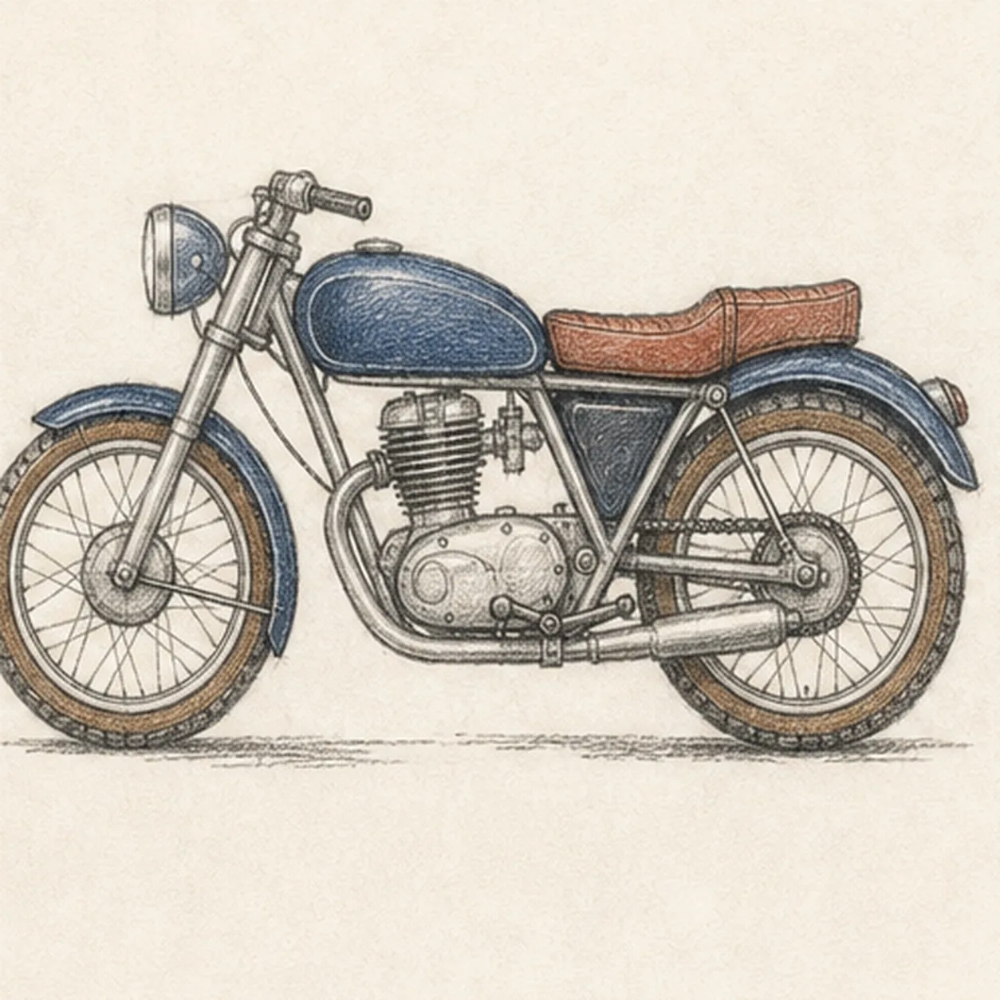

From the archive
Let's draw a classic motorcycle
Treat this as one small practice round: build the subject lightly, notice the shapes, then darken only the lines that help the finished sketch.
-
01

Map the wheels and machine
Use pale graphite to place exactly two equal wheel ellipses on one ground line, then map the frame triangle, fuel tank, stepped seat, engine block, front fork, headlamp, both fenders, exhaust, chain, cables, and broken shadow.
Sketch tip: Ghost both wheel circles before touching down and compare the long negative space between them. Reserve the engine inside the frame triangle now, and stop the chain, fork, and spokes at their hub and engine footprints so no keeper line needs erasing later.
-
02

Shape the rolling chassis
Wrap the guides with exactly two wheels, one triangular frame, the slanted front fork, rounded fuel tank, stepped seat, and exactly two close-fitting fenders while preserving every hardware route.
Sketch tip: Rotate the page for the longest tank and seat curves, then compare the open triangles below them. Keep both wheels the same diameter and let each fender follow its tire with a steady strip of paper between the arcs.
-
03

Fit the engine and controls
Clarify one single-cylinder engine, one round headlamp, one compact handlebar, the low exhaust pipe, the chain route, both hubs, and simple foot controls on their reserved guides.
Sketch tip: Work from the large engine case outward and trace each connection with your finger before darkening it. Let frame tubes stop at the engine case, the fork stop at the front hub, and the chain disappear naturally behind both hubs.
-
04

Build the mechanical rhythm
Add simplified spokes to both wheels, modest tire tread, engine fins, two cable curves, chain links, and the established broken graphite shadow without changing the side-view proportions.
Sketch tip: Place a few evenly spaced spoke directions first, then fill the gaps instead of trying to count around the wheel in one pass. Keep the tread and engine fins irregular enough to feel handmade, but organized enough to read at thumbnail size.
-
05

Layer the road-worn color
Glaze navy over the established tank and fenders, rust over the seat, cool silver gray over the engine and exhaust, and warm brown over the tire sidewalls while preserving graphite texture and open paper highlights.
Sketch tip: Pull two light pencil layers along each form rather than pressing hard at once. Leave narrow paper gaps on the tank crown, headlamp rim, seat edge, engine case, and exhaust so the dark machine keeps its volume.
-
06
![Handmade graphite and restrained colored-pencil sketch of one left-facing classic motorcycle in side view with exactly two equal spoked wheels, one navy rounded fuel tank, one rust-brown stepped seat, one triangular metal frame, one silver-gray single-cylinder engine, one slanted front fork, one compact handlebar, one round navy headlamp, exactly two navy fenders, one low silver exhaust pipe, one visible chain route, warm-brown tire accents, open paper highlights, and one broken graphite ground shadow](../assets/classic-motorcycle-side-view-finished-v1.webp)
Tune the classic finish
Strengthen selected keeper contours, deepen the existing mechanical hatching and shadow, balance the established colors, clarify small highlights, and soften only pale guides that distract.
Sketch tip: Count two wheels, two fenders, one tank, one seat, one engine, one headlamp, one exhaust, and one chain before stopping. Change the colors if you like, but preserve the same wheel spacing, frame connections, and readable side-view silhouette.


![Handmade graphite and restrained colored-pencil sketch of one pair of vintage binoculars in a three-quarter view with exactly two forest-green tapered barrels, exactly two large blue-gray objective lenses, exactly two charcoal eyepieces, one central hinge, one ridged focus wheel, simple grip ribs, small brass hardware, one continuous warm-brown leather strap forming a broad loop beneath the binoculars, exactly one brass buckle, one visible brass side ring, open paper highlights, and one broken graphite tabletop shadow](../assets/vintage-binoculars-with-strap-finished-v1.webp)